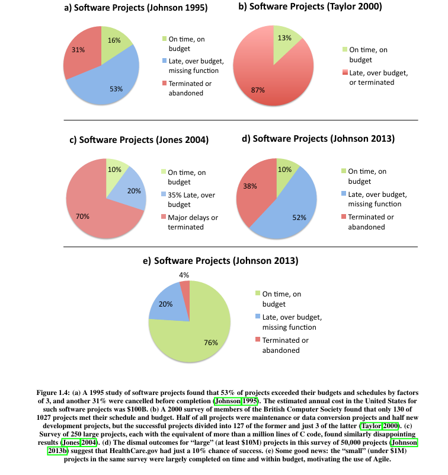

Welcome to the world of software engineering! As you will soon find out, becoming a capable software engineer involves much more than knowing how to write code or algorithms.
Ariane 5 rocket, a launcher developed by the European Space Agency, exploded shortly after take-off (Flight 501) on June 4, 1996, due to a catastrophic software error in the inertial reference system, which was reused from the earlier Ariane 4 rocket.
Key reasons for the failure included:
1Integer Overflow
The software attempted to convert a 64-bit floating-point number (representing horizontal velocity) into a 16-bit signed integer. Because Ariane 5 was faster than Ariane 4, this value exceeded the maximum limit of 32,767, causing an overflow error.
2Reused Software Design
The inertial reference system software was designed for the Ariane 4, which had a different trajectory and velocity. The software was not adapted for the higher performance of the Ariane 5.
3Inappropriate Error Handling
When the error occurred, the primary and backup computers shut down, sending incorrect signals to the boosters. This caused the rocket to veer off course and break apart, leading to self-destruction.
2. What is Software Engineering?
In today's world, software powers virtually everything. Organizations of all types and sizes, including businesses and governmental entities, depend on software systems to deliver their services effectively.
Given the vital role software plays in our society, it's not surprising that a field of computer science has emerged to develop systematic approaches for constructing software systems, particularly large and complex projects. This field is known as software engineering.
📚 Definition
Software engineering can be defined as the systematic, disciplined, and quantifiable approaches to developing, operating, maintaining, and evolving software systems. As mentioned, this field is central to computer science and involves applying engineering principles to software construction.
3. Historical Background
Historically, software engineering as a field emerged in the late 1960s. In October 1968, around 50 eminent computer scientists gathered for a week in Garmisch, Germany, for a NATO-sponsored conference. The purpose of this meeting was to discuss a crucial problem of computer usage, the so-called software. The conference produced a 130-page report advocating for software development based on practical and theoretical principles, drawing inspiration from other branches of engineering.
🏫
1968 NATO Software Engineering Conference, Garmisch, Germany
However, it was found out that software development is much more difficult than other engineering endeavors. In 1987, Frederick Brooks, wrote an essay titled "No Silver Bullet: Essence and Accident in Software Engineering". According to Brooks, there are two types of difficulties in software engineering: essential difficulties and accidental difficulties. Essential difficulties are intrinsic to the field and are unlikely to be solved by novel technologies.
4. Essential and Accidental Difficulties
Essential Difficulties
Brooks described the following essential difficulties:
1Complexity
Of all human-made constructions, software stands out as one of the most intricate and complex. Even traditional engineering constructs, such as satellites, nuclear power plants, or rockets, are increasingly relying on software.
2Conformity
Software must adapt continuously to its ever-changing environment. For instance, changes in tax legislation require prompt adaptations in related software. This level of adaptability is not required in other fields like Physics, where natural laws do not change due to human decisions.
3Changeability
There is constant pressure for software to evolve and incorporate new features. In fact, the more successful a software product is, the more likely it is to attract requests for modifications.
4Invisibility
It is inherently challenging to visualize the structure and complexity of software due to its abstract nature.
Accidental Difficulties
Software development also faces accidental difficulties, but these can be addressed by developers given adequate training and access to existing technologies and resources. Examples of such difficulties include an IDE that frequently crashes, a compiler with cryptic error messages, a framework lacking documentation, or a web application with a confusing interface.
Real World Example
🌎 The Scale of Real Software
The complexity involved in building software systems can be illustrated by considering their size. For instance, the open-source projects supported by the Linux Foundation have over 1.7 billion lines of code and involve 65,000 active developers, according to the foundation's 2023 report. Specifically, the Linux kernel, which is the core component of the operating system, has more than 30 million lines of code. Companies such as Google have also reported that their systems comprise billions of lines of code.
5. Software Development Process (SDLC)
What is SDLC?
The Software Development Life Cycle (SDLC) is a structured framework that defines the stages involved in developing software systems, from initial idea to deployment and maintenance. It provides a systematic approach to planning, building, testing, and evolving software products.
✅ An SDLC helps ensure:
Predictability in development
Better quality control
Reduced development risks
Improved communication among stakeholders
Different SDLC models exist, but they generally represent different ways of organizing the software development process.
6. Plan-and-Document: The Waterfall Model
The Plan-and-Document software development process emphasizes that documentation should be produced and maintained at every stage of development. One of the earliest formal descriptions of this structured process was introduced by Dr. Winston Royce (1970), an American computer scientist, which later became known as the Waterfall Model.
Waterfall model follows the following sequence of phases:
1Requirements analysis and specification
Define what the system must do.
2System and Architectural design
Design the overall structure of the system.
3Implementation and Integration
Write and assemble the code.
4Verification and Testing
Verify that the system meets its requirements.
5Operation and Maintenance
Deploy and maintain the system over time.
The core philosophy of this process is to complete a phase before going on to the next one, thereby removing as many errors as early as possible. Getting the early phases right could also prevent unnecessary work downstream.
As this process could take years, the extensive documentation helps to ensure that important information is not lost if a person leaves the project and that new people can get up to speed quickly when they join the project.
Because it flows from the top down to completion, this process is called the Waterfall software development process or Waterfall software development lifecycle (SDLC).
7. Limitations of the Plan-and-Document Approach
While Plan-and-Document processes introduced discipline to software development, they could not prevent some infamous, disastrous failures. Programmers have heard about the Ariane 5 explosion, the Therac-25 radiation tragedies, the Mars Climate Orbiter loss, and the failed FBI Virtual Case File so often that these cautionary tales have become industry clichés.
Surveys indicate that only a small fraction of projects are completed successfully on time and within budget, while many are delayed, over budget, or cancelled entirely. Figure below summarizes four surveys of software projects. With just 10% to 16% on time and on budget, more projects were cancelled or abandoned than met their mark. A closer look at the 13% of projects in survey (b) that were successful is even more sobering, as fewer than 1% of new development projects met their schedules and budgets. Although the first three surveys are 10 to 25 years old, survey d) is from 2013. Nearly 40% of these large projects were cancelled or abandoned, and 50% were late, over budget, and missing functionality.
📊
Software Project Surveys (Johnson 1995, Taylor 2000, Jones 2004, Johnson 2013)

⚠️ Key Finding
These findings suggest that purely predictive, rigid planning approaches often struggle in real-world environments where requirements evolve continuously.
8. The Agile Software Development Methodology
The limitations of traditional models led to the emergence of alternative approaches. A major turning point in software engineering occurred in February 2001, when a group of software developers gathered at a ski resort in Snowbird, Utah (USA) and formulated the Agile Manifesto, marking a shift toward lightweight and adaptive development processes. This movement can be seen as a "reformation" in software engineering thinking.
📄 The Agile Manifesto
"We are uncovering better ways of developing software by doing it and helping others do it. Through this work we have come to value:
Individuals and interactionsoverprocesses and tools
Working softwareovercomprehensive documentation
Customer collaborationovercontract negotiation
Responding to changeoverfollowing a plan
That is, while there is value in the items on the right, we value the items on the left more."
Core Idea of Agile
Unlike Waterfall, Agile assumes that:
Requirements will change over time
Software development is iterative and exploratory
Feedback is essential throughout the process
Instead of completing the system in one linear pass, Agile promotes:
Continuous refinement of a working system
Frequent delivery of small increments
Close collaboration with customers
Key Practices in Agile
Agile introduces several important engineering practices:
Practice
Description
Iterative Development
Build software in small cycles (iterations)
User Stories
Define requirements from the user's perspective
Test-Driven Development (TDD)
Write tests before implementation
Continuous Feedback
Regular stakeholder involvement
Velocity Tracking
Measure team progress over time
Software Release Philosophy
Agile encourages rapid and continuous delivery:
New software versions may be released every 1–2 weeks
Some systems even deploy updates daily
Releases are no longer rare, large events as in Waterfall
In contrast:
Waterfall projects typically release new version every 6–18 months
Agile Variants
Several frameworks fall under the Agile umbrella (Fowler, 2005):
⚡
Extreme Programming (XP)
🏃
Scrum
📋
Kanban
Each framework adapts Agile principles to different team structures and project needs.
9. Comparison Summary
Aspect
Waterfall (Plan-and-Document)
Agile
Development Style
Sequential
Iterative
Requirements
Fixed early
Evolving
Documentation
Extensive
Lightweight
Delivery
One final product
Continuous delivery
Customer Role
Limited
Continuous involvement
Best suited for
Stable, well-defined systems
Dynamic, evolving systems
10. Conclusion
The Waterfall model provides structure, predictability, and strong documentation practices, making it suitable for well-defined and safety-critical systems. However, it struggles in environments where requirements are uncertain or change frequently.
Agile methodologies address these limitations by embracing change, promoting iterative development, and emphasizing collaboration and working software over documentation.
Modern software engineering often combines elements of both approaches depending on project needs.
11. Software Engineering in the Age of AI
🤖 AI is Reshaping Software Engineering
AI is no longer a "tool," it's becoming a co-developer, tester, and even architect. So our course should evolve from:
"How to build software systems" → "How to build, manage, and verify AI-assisted software systems"
What is Happening
AI code assistants (Claude Code) are becoming more and more powerful, accurate and effective. AI now generates a significant portion—sometimes over 70 - 90% — of new code in many organizations, transforming the developer role from a creator of syntax into a reviewer and architect.
AI isn't replacing all software engineers. It's replacing a specific kind of work. The low-level, average, routine execution work is getting replaced with AI much faster than anyone could imagine. As a result, it's forcing us to think of what it means to be a software engineer in today's market.
Key Things to Do
1From "Coder" to "Reviewer"
Emphasize code review, reading, and debugging skills, as AI can generate code faster than humans, but struggles with complex, multi-system diagnostics.
2Focus on Fundamentals
Deep knowledge of algorithms, data structures, and architecture is essential to guide AI and correct its errors.
3System-Level Thinking over Syntax
Learn how to integrate, test, and deploy AI-generated components into a cohesive system rather than just producing standalone scripts.
4Become a T-Shaped Engineer
Become a T-shaped engineer, who is an expert in one area and competent in many others, to survive and thrive in the AI era.
5Prompt Engineering & Intent Communication
Learn how to precisely communicate requirements in natural language to AI to enable AI-Driven Development (AIDD).
6Build Real Systems
Build real systems and work in the field of AI Engineering.
Words of Hope
💡 AI as a Junior Developer
We should treat AI like a junior developer, but it's a very different thing to actually replace your junior devs with LLMs.
Even so, it's happening everywhere, and it's a worrying trend. Over the past 18 months, there's been a noticeable decline in the number of junior roles. Many job listings focus on Senior roles, asking for "AI-ready" developers. Companies want people who can wrangle these new tools immediately, with a wealth of experience and technical skill to fall back on when the AI creates an issue.
The issue is that if we're replacing juniors with AI, who will take charge when they move on? As Grosch warned, "In two years, when your seniors move on, who's left to lead?"
AI shouldn't replace juniors, but it should help train them. A good developer grows through curiosity, through debugging, and through failure. Those experiences build intuition and judgment, and while AI could remove some errors in the code, developing skills runs much deeper than simply removing errors from your IDE as quickly as possible.
⚠️ Vibe Coding versus Software Engineering
As AI leaders like Sam Altman and Jensen Huang predict a world without programmers, a silent crisis is forming underneath the hype. AI-generated code is flooding the internet—fast, impressive, and deeply fragile. But:
Nearly half of AI-generated code contains serious security vulnerabilities
"vibe-coded" apps often collapse when real users arrive
Debugging AI-written code is often harder than writing it from scratch
Dream of a one-person billion-dollar company is mostly a myth
🎯 Treating AI like a Helpful Colleague
Treating AI like a helpful colleague rather than a shortcut lets new engineers learn faster without skipping the foundations.
1Define software engineering and explain why it is considered a separate field from general programming.📝 Descriptive
▶ Show Sample Answer
Software engineering is defined as the systematic, disciplined, and quantifiable approach to developing, operating, maintaining, and evolving software systems. It applies engineering principles to software construction.
It is separate from general programming because software systems are vastly more complex than simple programs. The Linux Foundation's open-source projects alone contain over 1.7 billion lines of code involving 65,000 developers. Managing such scale requires structured processes, not just coding skills. Software also faces unique challenges — complexity, conformity, changeability, and invisibility — that cannot be solved by writing code alone.
2Describe the Ariane 5 rocket explosion (1996). What were the three key software engineering failures that caused it?📝 Descriptive
▶ Show Sample Answer
The Ariane 5 rocket (Flight 501) exploded on June 4, 1996, shortly after take-off due to a catastrophic software error. The three key failures were:
Integer Overflow: Software tried to convert a 64-bit floating-point number (horizontal velocity) into a 16-bit signed integer. Since Ariane 5 was faster than Ariane 4, the value exceeded the maximum of 32,767, causing an overflow error.
Reused Software Design: The inertial reference system was designed for Ariane 4, which had a different trajectory and velocity. It was not adapted for Ariane 5's higher performance.
Inappropriate Error Handling: When the error occurred, both primary and backup computers shut down, sending wrong signals to the boosters, causing the rocket to veer off course and self-destruct.
3Frederick Brooks identified four essential difficulties of software engineering. Explain each one and describe why they cannot be eliminated by better tools or technology.💡 Conceptual
▶ Show Sample Answer
Brooks called these essential difficulties because they are intrinsic to software — not caused by poor tools:
Complexity: Software is among the most complex human-made constructions. Even satellites and nuclear plants rely heavily on software. No tool removes this inherent complexity.
Conformity: Software must continuously adapt to external changes (laws, business rules). Unlike physics, human decisions change the requirements. Better tools don't prevent the environment from changing.
Changeability: Successful software attracts modification requests constantly. The pressure to evolve is intrinsic to the nature of software success.
Invisibility: Software has no physical form, making it hard to visualize its structure and complexity. Unlike a bridge or circuit, you cannot look at software and immediately understand its shape.
4What is the difference between essential difficulties and accidental difficulties in software engineering? Give one example of each.💡 Conceptual
▶ Show Sample Answer
Essential difficulties are intrinsic to the nature of software itself and cannot be resolved by any technology or better tooling. Example: the invisibility of software — there is no physical representation that lets you see its full structure at a glance.
Accidental difficulties are incidental problems caused by the current state of tools and environments, and can be solved with better training, tools, or resources. Example: an IDE that frequently crashes, or a compiler with cryptic error messages. These are frustrating but addressable.
5Explain what SDLC stands for and list four benefits that a structured SDLC provides to a software project.📝 Descriptive
▶ Show Sample Answer
SDLC stands for Software Development Life Cycle. It is a structured framework that defines the stages involved in developing software systems, from initial idea to deployment and maintenance.
Four benefits of a structured SDLC:
Predictability in development
Better quality control
Reduced development risks
Improved communication among stakeholders
6Compare the Waterfall model and the Agile methodology across the following dimensions: development style, requirements handling, delivery approach, and customer role. Which would you recommend for a startup building a new mobile app and why?📊 Analytical
▶ Show Sample Answer
Dimension
Waterfall
Agile
Development Style
Sequential
Iterative
Requirements
Fixed early
Evolving
Delivery
One final product
Continuous delivery
Customer Role
Limited
Continuous involvement
Recommendation: Agile. A startup building a new mobile app typically has uncertain, evolving requirements. Users' preferences will only become clear after real-world usage. Agile allows releasing a small working version every 1–2 weeks, gathering feedback, and iterating — reducing the risk of building the wrong product. Waterfall would require locking in all requirements upfront, which is unrealistic for a startup environment.
7Survey data shows that only 10%–16% of software projects are completed on time and within budget, with up to 40% cancelled or abandoned. Analyse the reasons behind these failures, specifically relating them to the limitations of the Waterfall model described in the lecture.📊 Analytical
▶ Show Sample Answer
The survey data (Johnson 1995, Taylor 2000, Jones 2004, Johnson 2013) consistently shows that the majority of software projects fail to meet their objectives. The core limitation is that Waterfall is a purely predictive, rigid planning approach that struggles when requirements evolve continuously — which is the norm in real-world development.
Specific Waterfall limitations that cause failures:
Requirements are fixed early. If they change later (due to market shifts, regulatory changes, or user feedback), the entire plan breaks.
The product is only delivered at the end. Customers cannot provide feedback until it is too late to change course without massive cost.
Documentation-heavy processes add overhead but do not guarantee the right system is built.
The sequential nature means errors discovered late (in testing or operation) require going back to much earlier phases.
These findings motivated the creation of Agile, which embraces changing requirements and delivers working software incrementally.
8The lecture states that AI now generates 70–90% of new code in many organizations. Analyse how this changes the required skill set of a software engineer. In your answer, reference at least three specific skills mentioned in the lecture.📊 Analytical
▶ Show Sample Answer
When AI generates the majority of code, the developer's role shifts from creator of syntax to reviewer and architect. Three specific skills that become more important:
Code review and debugging: AI generates code faster than humans but struggles with complex, multi-system diagnostics. Engineers must be capable of reading, understanding, and debugging AI-written code — which the lecture notes is often harder than writing from scratch.
System-level thinking: Instead of producing standalone scripts, engineers must integrate, test, and deploy AI-generated components into coherent systems. This requires architectural knowledge beyond syntax.
Prompt engineering & intent communication: Engineers must precisely communicate requirements in natural language to AI. A bad specification scales into an entire codebase full of errors, so the quality of the specification becomes the primary lever of quality.
9The Ariane 5 integer overflow occurred because a 64-bit floating-point value was converted into a 16-bit signed integer. What is the maximum value a 16-bit signed integer can hold? If the horizontal velocity value at the time of failure was 40,000, calculate by how much it exceeded this limit. Express your answer as both a raw overflow amount and as a percentage overflow above the limit.💻 Calculation
▶ Show Sample Answer
A 16-bit signed integer uses 1 bit for the sign, leaving 15 bits for magnitude:
Maximum value = 215 − 1 = 32,768 − 1 = 32,767
The lecture confirms this: the value exceeded the maximum limit of 32,767.
If the velocity value was 40,000:
Raw overflow: 40,000 − 32,767 = 7,233
Percentage overflow: (7,233 ÷ 32,767) × 100 ≈ 22.1% above the maximum
This illustrates how reusing code without re-validating its assumptions against a new, higher-performance system led to catastrophic failure.
10You are an AI tool. A developer gives you this prompt: “Build me a student grade management app.” Based on the lecture's discussion of AI-generated code risks and the importance of specification, (a) identify two specific dangers of acting on this prompt as-is, and (b) rewrite the prompt to be precise enough to reduce the risk of a bad specification scaling into a bad codebase.💻 Coding / Applied
▶ Show Sample Answer
(a) Two dangers of the vague prompt:
Security vulnerabilities at scale: The lecture states that nearly half of AI-generated code contains serious security vulnerabilities. A vague prompt gives AI no constraints on authentication, access control, or data storage, so the AI may generate insecure patterns that then scale across the entire codebase.
Collapse under real usage: The lecture notes that “vibe-coded” apps built on underspecified prompts often collapse when real users arrive. Without specifying how many students, what grading scheme, what edge cases (late submissions, absent students), the generated system will likely break under real conditions.
(b) Improved prompt (example):
Build a Python-based student grade management system for a university course.
Requirements:
- Store student names, IDs, and grades for up to 5 assignments
- Calculate the final grade as the average of all assignments (0–100 scale)
- Map final grades to letter grades: A≥90, B≥80, C≥70, D≥60, F below 60
- Allow adding, updating, and deleting student records
- Handle edge cases: missing grades should be treated as 0
- Store data in a CSV file; no database required
- Do not include any web interface; CLI only